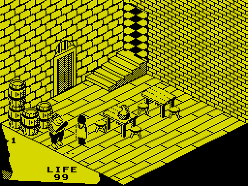
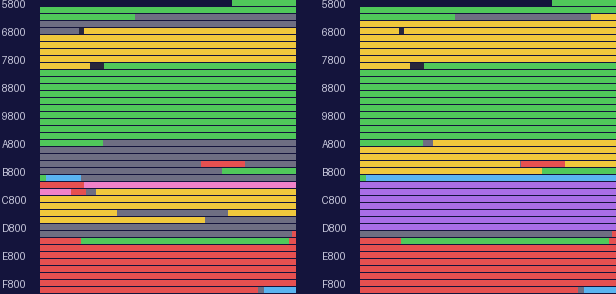

| How the game is put together |
Fairlight (The Edge, 1985) is Bo Jangeborg's game, and its engine is his own. It is an isometric flip-screen adventure like Ultimate's Knight Lore, but it works quite differently: a room is not a picture or a set of blocks but a short program of points, lines and textured fills that the game runs each time the knight walks in, and a moving object is put onto the screen straight from four 256-byte buffers and a clean copy of the room, without the screen ever being redrawn as a whole. This page is the outline: the tape, the start-up, a pass of the main loop, the object records, the states objects are in, where everything lies in memory, and what else the tape carries.
The tape carries the Alkatraz Protection System's loader. Its BASIC holds a routine that decrypts itself in layers and loads a second, turbo-speed stage, which reads the long block: the loading screen a line at a time in its own order, then the game in pieces, every byte XORed with a key that changes as it goes, with the count of bytes left and with the address it is stored at. The first piece extends the loader's own list of pieces; the last three bytes loaded are the address the loader's last RET goes to, $C47C, and a byte of the checksum (LOADER_TABLE, offset 25). When the checksum holds, the loader clears itself (LOADER_CLEARED) and returns there; when it does not, LOADER_FAILURE wipes memory, asks for the tape to be rewound and resets the machine. The build loads the tape through all of this in SkoolKit's simulator and does the decryption again on the tape's own bytes, checking the result against what the simulator loaded.
START is the game's first instruction. It sets the stack two bytes below the end of a stretch of leftover text (SOURCE_AND_STACK), plays the loading tune (LOADING_TUNE) until a key is pressed, points IY at the variables at $FF80, turns interrupts off, and makes its copies:
| From | To | Bytes | What |
|---|---|---|---|
| OBJECTS_TAPE | OBJECTS | 3,420 | the object table (and some text after it) |
| TEMPLATES_TAPE | TEMPLATES | 932 | the object templates and the room patches |
| OBJECTS | MASTER_OBJECTS | 1,200 | a master copy of the object table's first 1200 bytes, for new games |
| $FF80 | MASTER_VARIABLES | 61 | a new game's variables |
| KNIGHT | MASTER_KNIGHT | 20 | the knight's record |
and jumps to the title (TITLE_SCREEN), a loop the game never leaves: room 79 drawn with the title page's words over it, a key, the master copies put back, the knight put in the start room (TELE, the author's name), the game played inside ROOMST, then room 1 drawn behind GAME OVER, and round again. The places the tables are copied to hold leftover source text on the tape, and the places they are copied from, like the tune itself, become the game's screen buffers as soon as the first room is drawn: the start-up and the tune can run only once.
The tune is two voices on the beeper, each a square wave kept in its own copy of the port byte and sent to port $FE in turn, round a loop whose two ways take the same 96 T-states so that neither voice's pitch disturbs the other's. Each voice has 418 notes, the last 3 of them rests in both; a note lasts 18 passes of 256 turns of the loop, 442,368 T-states, about 0.126 seconds. Played to its end in the simulator with no key pressed, both voices fell silent after 415 notes and 52.6 seconds (the ROM's KEY-SCAN between notes adds a little to each), and the routine went on scanning the keyboard in silence.
The tune's routine turns interrupts on as it returns (LOADING_TUNE, at $C018), and the start-up turns them off three instructions later ($C487) -- for good: nothing turns them on again, and the game calls no ROM routine that would. It has to run that way. The sprites begin at $5B00 and lie over the ROM's system variables, which the ROM's interrupt routine writes to fifty times a second: FRAMES, at $5C78, is inside the sprite at SPRITE5C64, and the keyboard variables from $5C00 inside SPRITE5BE8. When this page was built, a second of play in the simulator with interrupts offered every frame left the interrupt flip-flop clear and FRAMES as it was ($00, $00, $C2). Ville Krumlinde's disassembly reads the IM 1 in his snapshot as the ROM's routine running fifty times a second; this disassembly's own earlier notes said the same. Neither is so.
So nothing paces the game: there is no HALT and no wait for the television's frame. A pass of the main loop takes as long as its work takes.
ROOMST enters a room: it moves the records of the things the knight carries up behind his own, draws the room (DRAW_CURRENT_ROOM, which also makes the records of its objects), copies the bare room to the clean copy, draws the doors and still things into it (DRAW_STILL_THINGS), copies it again, and falls into the main loop, MAIN_LOOP, which runs inside it until the game ends. One pass is:
The game returns from ROOMST when LIFE reaches 00, or on SYMBOL SHIFT and 0; a door, or the thing that carries the knight off, goes back into it with the stack as it was. Timed in the simulator when this page was built, 24 passes in each of a few rooms, standing still and walking, in T-states:
| Room | The knight | Records in use | Least | Mean | Most | Passes a second |
|---|---|---|---|---|---|---|
| room 29 | standing | 16 | 241,615 | 261,934 | 281,280 | 13.4 |
| room 29 | walking (Q, A) | 16 | 239,415 | 327,932 | 733,043 | 10.7 |
| room 2 | standing | 26 | 412,097 | 465,244 | 511,057 | 7.5 |
| room 2 | walking (Q, A) | 26 | 414,124 | 542,512 | 951,106 | 6.5 |
| room 20 | standing | 28 | 557,347 | 558,370 | 581,256 | 6.3 |
| room 20 | walking (Q, A) | 28 | 514,414 | 643,447 | 1,049,058 | 5.4 |
| room 71 | standing | 37 | 401,398 | 401,410 | 401,495 | 8.7 |
| room 71 | walking (Q, A) | 37 | 342,997 | 465,499 | 895,449 | 7.5 |
So the game runs at 5 to 13 passes a second, slower where more is moving. The slowest passes are the walking ones in which the knight turns round (every sixth here): turning mirrors all his frames in memory, which costs more than a whole pass (turning round). One pass in room 2, traced part by part and record by record, the knight walking:
| Part of the pass | T-states |
|---|---|
| LIFE printed, if it changed | 32 |
| the message line | 98 |
| every record from the knight's (CHE3D) | 372,169 |
| the keys between passes | 425 |
| the whole pass | 372,724 |
| Record | What | Sprite | T-states in CHE3D |
|---|---|---|---|
| 7 | the knight | $933E | 94,064 |
| 8 | a thing lying (state 0) | $8198 | 12,912 |
| 9 | a thing lying (state 0) | $8198 | 12,644 |
| 10 | a thing lying (state 0) | $8198 | 12,752 |
| 11 | a thing lying (state 0) | $8198 | 10,491 |
| 12 | a thing lying (state 0) | $7D00 | 12,645 |
| 13 | a thing lying (state 0) | $7D00 | 12,626 |
| 14 | a thing lying (state 0) | $7E54 | 12,519 |
| 15 | a thing lying (state 0) | $7E54 | 12,574 |
| 16 | a thing lying (state 0) | $7E54 | 12,166 |
| 17 | a thing lying (state 0) | $7E54 | 12,194 |
| 18 | a thing lying (state 0) | $8246 | 8,499 |
| 19 | the troll (state 7) | $8BB8 | 143,033 |
| 20 | a door | 91 | |
| 21 | a door | 91 | |
| 22 | no sprite: an invisible box | 91 | |
| 23 | no sprite: an invisible box | 91 | |
| 24 | no sprite: an invisible box | 91 | |
| 25 | no sprite: an invisible box | 91 | |
| 26 | no sprite: an invisible box | 91 |
13 of the 20 records took any time: CHE3D returns at once for doors, invisible boxes and still things, which never move and are part of the clean copy. A thing lying on the floor is not still -- it can be pushed, carried or knocked -- and even when it does not move it costs thousands of T-states a pass: gravity asks it to fall every time, and the step is tested against every other record before the floor stops it. A creature or the knight costs its update, its collision tests, and the redraw of its rectangle of screen with everything that overlaps it.

Room 2 at the end of the pass in the table: the knight, walking with Y held, and the troll beside him, with the barrels behind and the table and stools to the right.
Everything the game moves, draws or collides with is a record of twenty bytes, numbered from 1 at FIXED_RECORDS. The first six have no sprite and are the room itself: its floor, its ceiling and its four walls, huge boxes that each room's patch code moves into place. The seventh is the knight (KNIGHT); after him come the things he carries, then the room's objects, made from the object table and from the room's own drawing (RECORDS). The fields:
| Offset | What |
|---|---|
| +0, +1 | where the sprite's top left corner is on the screen: x, and y counted up from the bottom |
| +2, +3 | the sprite's width in pixels and height in rows |
| +4, +5 | the sprite: its image, then its mask; 0 for a record nothing draws |
| +6, +7, +8 | where it is in the room: +6 and +8 along the floor, +7 the height of its top |
| +9, +10, +11 | its size: along +6, down from the top, along +8. The box is a corner and three sizes |
| +12 | its kind: the low nibble what it is (1 a door, 4-11 things that do something), bit 4 hurts at a touch, bit 5 can be carried, bit 6 can be killed, bit 7 a fighter |
| +13 | the direction it goes in (the bits are on the movement page) |
| +14 | its state: the low nibble its behaviour, bit 4 carried along one pass, bits 5 and 6 which way it faces, bit 7 in the air |
| +15 | a countdown: to a new course, the end of a jump's rise or a bounce |
| +16 | 0 for a still object, which is never updated; otherwise 16 plus its weight, and bit 5 while it is carried or gone |
| +17 | its animation: the frame, the run's last frame, going back |
| +18 | its course: a chaser's heading, or the direction it keeps in the air |
| +19 | its number in the object table, for the things; 0 for anything else |
While a record is being updated, CHE3D copies its first 19 bytes to $FFE4 on, so the code reaches field n as IY+$64+n; the author's leftover source calls that copy T and the variables V, as in (T+13) and (V+3). The same bytes serve the room drawing as its points and mode while a room is drawn, and the sprite drawing as the rectangle it rebuilds: each use sets what it reads first.
The low nibble of +14 is an object's state, and CHE3D and its continuation CREATURE_UPDATE are a dispatch on it. Each object type's template (TEMPLATES) gives the state it starts in; read from the templates when this page was built:
| State | Who | Handled at | What it does |
|---|---|---|---|
| 0 | things lying | CHE3D | only falls; a thing just dropped or knocked makes its last movement once more |
| 3 | type 2 | I30 | bounces about: keeps its movement, turning round off whatever it meets |
| 4 | type 48 | I4 | strikes when the knight is within reach in front of it |
| 5 | the knight in a jump | I5 | eight passes going up |
| 6, 10 | types 26, 33 | GUARD_MOVES | guards: patrol, and chase within 30 |
| 7 | type 13 | I6 | the troll: chases |
| 8 | the knight | KNIGHT_UPDATE | the controls |
| 9 | type 27 | I9 | rises out of the floor, then chases (or goes for a decoy) |
| 11 | type 45 | WRAITH_MOVES | the wraith: chases |
| 12, 14 | types 40, 51 | I12 | hang in the air and flicker |
| 13 | type 52 | I6 | the ghost: wanders, and steals things it touches |
| 15 | type 56 | I6 | stands still until a thing of kind 11 lies in the room, then becomes a wraith |
Before any state, CHE3D passes over records with no sprite, doors, things carried or gone, and still things; on a room's first pass it only draws each object; and an object in the air carries on the way it was going. Every case ends in the same place, ANIMATE_AND_MOVE: the frame, gravity, the step, the collisions and the redraw. State 2 is in no template, so the one piece of code that would set one up never runs. The creatures are on their own page.

$5B00 to $FFFF, a row a kilobyte and four bytes a pixel: on the left as the tape leaves it at START, on the right once the game runs. Key: code sprites, the font and the textures rooms, parts, the object table and the templates object records and variables the loading tune the clean copy and the compositor's pages leftovers: source text, symbols, the loader unused or unidentified.
| From | To | Bytes | What |
|---|---|---|---|
| SPRITE5B00 | $617B | 1,660 | sprites (and the system variables under them) |
| SOURCE_AND_STACK | $639B | 544 | leftover source text; the stack grows down from its top |
| MASTER_OBJECTS | $689C | 1,281 | leftover text on the tape; the master copy of the object table, the variables and the knight's record once the game starts |
| ZEROS_BEFORE_ROOMS | $68AF | 19 | zeros |
| ROOM1 | $758B | 3,292 | the 81 rooms |
| PART1 | $7CCA | 1,855 | the 56 parts rooms are drawn from |
| BYTES_AFTER_PARTS | $7CFF | 53 | 53 bytes not identified |
| SPRITE7D00 | $A8FB | 11,260 | sprites |
| SOURCE_BEFORE_OBJECTS | $A923 | 40 | leftover source text |
| OBJECTS | $B67F | 3,420 | leftover text on the tape; the object table once the start-up has copied it |
| SOURCE_BEFORE_TITLE | $B685 | 6 | leftover source text |
| TITLE_PAGE_TEXT | $B733 | 174 | the title page's words |
| TEMPLATES | $BAD7 | 932 | leftover text on the tape; the templates and patches once copied |
| FONT | $BC17 | 320 | the font |
| FIXED_RECORDS | $BCA3 | 140 | the six fixed records and the knight's |
| RECORDS | $BFFF | 860 | leftover text on the tape; the room's object records in play |
| LOADING_TUNE | $C0AF | 176 | the loading tune's player; the clean copy of the room in play |
| TUNE_VOICES | $C47B | 972 | the loading tune's notes |
| START | $C4B9 | 62 | the start-up |
| SOURCE_AFTER_START | $C4DF | 38 | leftover text |
| OBJECTS_TAPE | $D134 | 3,157 | the object table as the tape has it |
| SOURCE_AFTER_OBJECTS | $D2EF | 443 | leftover text |
| TEMPLATES_TAPE | $D693 | 932 | the templates as the tape has them |
| SOURCE_AFTER_TEMPLATES | $DABF | 1,068 | leftover text; the clean copy ends at $D7FF, and the compositor's four pages run from $D800 to $DBFF |
| LOADER_TABLE | $DBFF | 320 | the loader's table and its cleared code |
| $DC00 | $DD38 | 313 | the end of the cleared loader, and its failure routine |
| SYMBOL_TABLE | $DFF1 | 697 | the assembler's symbol table |
| MESS2 | $E0A3 | 178 | the closing lines, the message line, symbol scraps |
| TEXTURES | $E3E3 | 832 | the 26 textures |
| COMPOSITE_TO_SCREEN | $FF69 | 7,046 | the code |
| UDG_LEFTOVERS | $FF7F | 22 | bits of the ROM's user-defined graphics |
| OBJECT_COUNT | $FFFF | 128 | the variables |
The code is about 7 KB, most of it from SHOW_MESSAGE up. Two things make the map unusual. The start-up moves the level data it needs from where the tape has it to where the code reads it, and the places it leaves become buffers: from the first room on, $C000-$D7FF is the clean copy of the room (RESTOR) and $D800-$DBFF the four pages the compositor works in (COMPOSITE_TO_SCREEN). And about 9 KB of what the tape loads is not the game at all.
The tape was saved from the development machine's memory, and much of that memory was the tools' rather than the game's. Pieces of the game's own source text lie in the gaps between the game's bytes, and where the start-up copies tables over them. Each line is a carriage return, a two-byte line number and the text; read by their line numbers only:
| From | To | Lines | Line numbers |
|---|---|---|---|
| SOURCE_AND_STACK | $639B | 43 | 6250-6670 |
| SOURCE_BEFORE_OBJECTS | $B685 | 80 | 3130-3920 |
| TEMPLATES | $BAD7 | 22 | 3970-4180 |
| RECORDS | $BFFF | 21 | 4300-4510 |
| $C436 | $C47B | 2 | 4920-4940 |
| SOURCE_AFTER_START | $C4DF | 2 | 12860-12870 |
| SOURCE_AFTER_OBJECTS | $D2EF | 32 | 15380-15690 |
| SOURCE_AFTER_TEMPLATES | $DABF | 83 | 16370-17190 |
(and 22 more lines, 6680-6890, at MASTER_OBJECTS on the tape, before the start-up copies the master copy over them). The lines near the object table are its own DEFB lines; others are the source of the pick-up, the key reading, the room's set-up and the use of a carried thing, which is how many of the author's labels are known -- matched instruction for instruction to the code they became. They also give his two variable bases, V for $FF80 and T for $FFE4.
Part of the assembler's symbol table survives too (SYMBOL_TABLE): 64 whole symbols, each a node of a tree with a name and a value, and the value of every one an instruction of this very release's code. 20 of them name the first instruction of a routine in this listing, and the listing uses his names for those: WAIT, INPUT, IN31, ATTRI, RESTOR, MIMAN, MIWRAI, MITRO, MW, FACING, DECLI1, DE1, CHE3D, ZZ1, I6, BUT, BUT2, EEN, ZOOMIN, ROOMST. The rest name places inside routines, and are kept as their labels. The title routine's own name is lost but for its last letter: the loader's bytes cut the first node short.
Ville Krumlinde's disassembly came first, and many facts and some names here are his. It was made from a snapshot taken in play, with the start-up long gone, which is why his entry point and his stack are reconstructions; this listing starts from the tape, at START. Where this page differs from his: interrupts are off, not on; the six records at FIXED_RECORDS are the room's box, not spare records; SAVE_OBJECT_POSITIONS copies the records' places into the object table, not the other way; and the compositor reads all four of its pages (how a moving object is drawn).